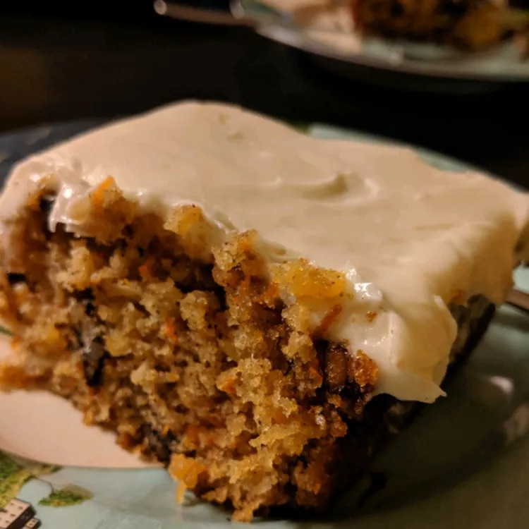

Old-Fashioned Carrot Cake

Description
Here's an old-fashioned carrot cake that's got more carrots than spice. Pecans can be substituted for walnuts.
Ingredients
- 2 cups white sugar
- ¾ cup vegetable oil
- ¾ cup buttermilk
- 3 large eggs
- 2 teaspoons vanilla extract, divided
- 2 cups grated carrots
- 1 (15 ounce) can crushed pineapple, drained
- 1 cup flaked coconut
- 2 cups all-purpose flour
- 2 teaspoons baking soda
- 2 teaspoons ground cinnamon
- 1 ½ teaspoons salt
- 1 cup chopped walnuts
- 4 cups confectioners' sugar
- 1 (8 ounce) package cream cheese
- ½ cup butter
Steps
- Step 1:
Preheat the oven to 350 degrees F (175 degrees C). Grease a 9x13-inch baking dish; set aside.
- Step 2:
Mix together sugar, oil, buttermilk, eggs, and 1 teaspoon vanilla in a large bowl until well combined. Stir in carrots, pineapple, and coconut. Combine flour, baking soda, cinnamon, and salt in a medium bowl; gently stir into carrot mixture. Mix in nuts until incorporated. Spread batter into the prepared dish.
- Step 3:
Bake in the preheated oven until a toothpick inserted into cake comes out clean, about 55 minutes. Remove from the oven and set aside to cool.
- Step 4:
Beat together confectioners' sugar, cream cheese, butter, and remaining 1 teaspoon vanilla in a large bowl with an electric mixer until creamy. Frost cooled cake while still in the dish.